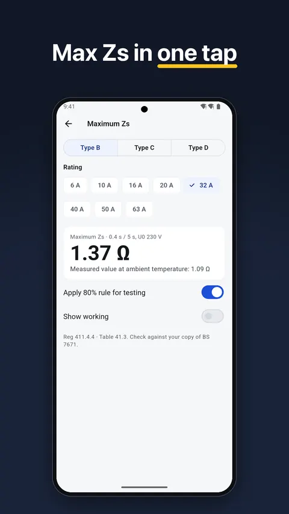

Not a government app. Sparkwise is an independent study app made by Kodfu Bilisim. It is not affiliated with or endorsed by the IET, BSI, City & Guilds, ECS or JIB. It does not contain the real exam questions and never reproduces BS 7671 text.
Cable and fault calculations: free 18th Edition practice questions
Rating factors, voltage drop, maximum Zs, prospective fault current and adiabatic checks, worked step by step.
10 original questions from the Sparkwise app, each with the answer and an explanation. Open book: have your copy of BS 7671:2018+A4:2026 ready and look each answer up, as you would in the exam. No sign-up, nothing saved. These are not the real exam questions: no app or website can show you those.
Question 1 · Choose one answer
A 2.5 mm² cable has a voltage drop of 18 mV/A/m. It carries 16 A over 30 m. What is the voltage drop?
- 0.86 V
- 8.64 V
- 86.4 V
- 11.5 V
Show the answer
Answer B: 8.64 V
VD = 18 × 16 × 30 ÷ 1000 = 8.64 V. Forgetting to divide by 1000 gives 8640; misplacing the decimal gives 0.86 or 86.4.
Worked solution. Formula: VD = (mV/A/m × Ib × L) ÷ 1000
- Multiply: 18 × 16 × 30 = 8640
- Convert to volts: 8640 ÷ 1000 = 8.64 V
Common mistake: Forgetting to divide by 1000 gives 8640, or a slipped decimal gives 86.4 V.
Where to look: Appendix 4 · voltage drop
Question 2 · Choose one answer
What is 3% of 230 V, the usual voltage drop limit for lighting circuits?
- 2.3 V
- 6.9 V
- 11.5 V
- 13.8 V
Show the answer
Answer B: 6.9 V
230 × 0.03 = 6.9 V. 11.5 V is the 5% limit for other circuits.
Worked solution. Formula: Limit = 3% × 230 V
- Convert the percentage: 3% = 0.03
- Multiply: 0.03 × 230 = 6.9 V
Common mistake: 11.5 V is the 5% figure for other circuits.
Where to look: Appendix 4 · Table 4Ab
Question 3 · Choose one answer
To stop nuisance tripping, a 20 A Type B device is swapped for a 20 A Type C. What does the maximum Zs become (U0 230 V, Cmin 0.95)?
- 0.55 Ω
- 1.09 Ω
- 2.19 Ω
- 1.15 Ω
Show the answer
Answer B: 1.09 Ω
Ia doubles to 10 × 20 = 200 A, so Zs = 218.5 ÷ 200 = 1.09 Ω, half the Type B value. The circuit must be re-checked.
Worked solution. Formula: Zs ≤ (U0 × Cmin) ÷ Ia
- Find Ia for Type C: 10 × 20 = 200 A
- Divide: 218.5 ÷ 200 = 1.09 Ω
- Re-check the circuit: The limit halves, so the measured Zs must be compared again
Common mistake: Keeping the Type B value of 2.19 Ω can leave the circuit unable to disconnect in time.
Where to look: Reg 411.4.4 · Table 41.3
Question 4 · Choose one answer
A 32 A device protects a cable with Ca 0.94 and Cg 0.8. What minimum tabulated current-carrying capacity It is needed?
- 24.1 A
- 32 A
- 42.6 A
- 34.0 A
Show the answer
Answer C: 42.6 A
It ≥ 32 ÷ (0.94 × 0.8) = 32 ÷ 0.752 = 42.6 A. Multiplying instead of dividing gives 24.1 A.
Worked solution. Formula: It ≥ In ÷ (product of rating factors)
- Multiply the factors: 0.94 × 0.8 = 0.752
- Divide: 32 ÷ 0.752 = 42.6 A
Common mistake: Multiplying 32 by the factors gives 24.1 A, which undersizes the cable.
Where to look: Appendix 4 · rating factors
Question 5 · Choose one answer
A fault current of 1000 A is cleared in 0.1 s. With k = 115, what is the minimum protective conductor size from the adiabatic equation?
- 0.87 mm²
- 2.75 mm²
- 8.70 mm²
- 27.5 mm²
Show the answer
Answer B: 2.75 mm²
S = √(1000² × 0.1) ÷ 115 = 316.2 ÷ 115 = 2.75 mm². The next standard size up would be chosen.
Worked solution. Formula: S = √(I² × t) ÷ k
- Square the current: 1000² = 1 000 000
- Multiply by time: 1 000 000 × 0.1 = 100 000
- Root and divide: √100 000 = 316.2; 316.2 ÷ 115 = 2.75 mm²
Common mistake: Forgetting the square root gives a far larger figure; then pick the next standard size up.
Where to look: Reg 543.1.3
Question 6 · Choose one answer
Ze is 0.35 Ω and the measured R1 + R2 of a circuit is 0.62 Ω. What is Zs?
- 0.27 Ω
- 0.62 Ω
- 0.97 Ω
- 1.37 Ω
Show the answer
Answer C: 0.97 Ω
Zs = Ze + (R1 + R2) = 0.35 + 0.62 = 0.97 Ω.
Worked solution. Formula: Zs = Ze + (R1 + R2)
- Add: 0.35 + 0.62 = 0.97 Ω
Common mistake: Subtracting gives 0.27 Ω; loop impedances in series add.
Where to look: Reg 411.4.4 · Zs = Ze + (R1 + R2)
Question 7 · Choose one answer
Supplementary bonding is needed where a 16 A Type B device is used (Ia = 80 A). What is the maximum bonding resistance?
- 0.20 Ω
- 0.63 Ω
- 1.25 Ω
- 2.73 Ω
Show the answer
Answer B: 0.63 Ω
R ≤ 50 ÷ Ia = 50 ÷ 80 = 0.625 Ω, about 0.63 Ω.
Worked solution. Formula: R ≤ 50 V ÷ Ia
- Find Ia: Type B 16 A: 5 × 16 = 80 A
- Divide: 50 ÷ 80 = 0.625, about 0.63 Ω
Common mistake: Using In (16 A) instead of Ia gives 3.13 Ω.
Where to look: Reg 415.2.2
Question 8 · Choose one answer
A balanced 20 kW three-phase load at 400 V and unity power factor draws what line current?
- 16.7 A
- 28.9 A
- 50 A
- 86.6 A
Show the answer
Answer B: 28.9 A
I = P ÷ (√3 × U) = 20 000 ÷ (1.732 × 400) = 28.9 A. Dividing by 400 only gives 50 A.
Worked solution. Formula: Ib = P ÷ (√3 × UL)
- Find √3 × UL: 1.732 × 400 = 692.8
- Divide: 20 000 ÷ 692.8 = 28.9 A
Common mistake: Dividing by 400 only gives 50 A; dividing by 230 gives 87 A.
Where to look: Design current: Ib = P ÷ (√3 × UL)
Question 9 · Choose one answer
A circuit has Zs of 1.15 Ω with U0 of 230 V and is protected by a 32 A Type B device. What is the earth fault current, and will the device trip instantly?
- 200 A, yes, as it exceeds 160 A
- 200 A, no, as it is below 320 A
- 264 A, yes, as it exceeds 160 A
- 20 A, no, as it is below 32 A
Show the answer
Answer A: 200 A, yes, as it exceeds 160 A
I = 230 ÷ 1.15 = 200 A. A Type B 32 A device trips instantly at 5 × 32 = 160 A, so it will.
Worked solution. Formula: I = U0 ÷ Zs, then compare with Ia
- Find the fault current: 230 ÷ 1.15 = 200 A
- Find Ia: Type B: 5 × 32 = 160 A
- Compare: 200 A is more than 160 A, so it trips instantly
Common mistake: Using 10 × In (320 A) applies a Type C rule to a Type B device.
Where to look: Reg 411.4.4 · Appendix 3
Question 10 · Choose one answer
A ring has end-to-end readings r1 = 0.60 Ω and r2 = 1.00 Ω, and Ze is 0.25 Ω. What is the expected Zs at the sockets?
- 0.40 Ω
- 0.65 Ω
- 0.85 Ω
- 1.85 Ω
Show the answer
Answer B: 0.65 Ω
R1 + R2 = (0.60 + 1.00) ÷ 4 = 0.40 Ω, so Zs = 0.25 + 0.40 = 0.65 Ω.
Worked solution. Formula: Zs = Ze + (r1 + r2) ÷ 4
- Find R1 + R2 for the ring: (0.60 + 1.00) ÷ 4 = 0.40 Ω
- Add Ze: 0.25 + 0.40 = 0.65 Ω
Common mistake: Adding the end-to-end values without dividing by 4 gives 1.85 Ω.
Where to look: Reg 643.2.1 · Reg 411.4.4
You’ve seen 10 of 32 questions in this topic
The Sparkwise app has all 32, each with an explanation, and 32 with a step-by-step worked solution. Across the whole 18th Edition there are 538 questions in 16 topics, plus timed 60-question mock exams of 2 hours.
3 of them are free in the app, the rest come with Pro. Sparkwise Pro is £12.99 one-off and unlocks every question, every mock exam and every worked solution for both exams. No subscription.
Android now; iPhone version not yet available.
Revision notes
Voltage drop from mV/A/m
Appendix 4 lists voltage drop in millivolts per amp per metre (mV/A/m). Multiply the tabulated value by the design current and the length, then divide by 1000 to get volts: VD = (mV/A/m × Ib × L) ÷ 1000. Compare the result with the limit for a 230 V circuit from a public supply: 3% for lighting (6.9 V) and 5% for other uses (11.5 V). To find a maximum length, rearrange: L = (allowed VD × 1000) ÷ (mV/A/m × Ib). For three-phase circuits use the three-phase mV/A/m value.
Applying rating factors
To choose a cable, find the tabulated current It it must have so that, after rating factors, it can still carry the device rating: It ≥ In ÷ (Ca × Cg × Ci × Cc). Ca corrects for ambient temperature, Cg for grouping, Ci for thermal insulation and Cc for a BS 3036 fuse (0.725) or buried cables. Multiply the factors together and divide In by the product. A common mistake is multiplying In by the factors, which gives a smaller cable that will overheat.
Maximum Zs from first principles
The maximum earth fault loop impedance for a TN circuit comes from Zs × Ia ≤ U0 × Cmin, so Zs(max) = (230 × 0.95) ÷ Ia = 218.5 ÷ Ia. For circuit-breakers to BS EN 60898, Ia is 5 × In for Type B, 10 × In for Type C and 20 × In for Type D. For example, a 20 A Type B gives 218.5 ÷ 100 = 2.19 Ω. Forgetting Cmin, or using the wrong multiple of In, are the usual errors.
Earth fault loop impedance and fault current
The earth fault loop impedance of a circuit is the external part plus the circuit's own conductors: Zs = Ze + (R1 + R2). The prospective earth fault current is then roughly U0 ÷ Zs. At the origin, using Ze alone gives the prospective fault current there: for example, 230 ÷ 0.35 = 657 A. Measured R1 + R2 values at room temperature are lower than at operating temperature, so a multiplier, commonly 1.2 for 70 °C thermoplastic cable, is used when estimating Zs from conductor resistance.
The adiabatic equation
The adiabatic equation checks that a protective conductor can carry fault current for the disconnection time without overheating: S = √(I²t) ÷ k. I is the fault current in amps, t the disconnection time in seconds from the device's time/current curve in Appendix 3, and k a factor from the tables in Chapter 54 for the conductor and insulation. The answer is the minimum cross-sectional area in mm²; the next standard size up is chosen.
TT, bonding and ring circuit figures
In a TT system with an RCD, the electrode resistance RA must satisfy RA × IΔn ≤ 50 V, so RA ≤ 50 ÷ IΔn: 1667 Ω for 30 mA and 500 Ω for 100 mA. Supplementary bonding must have resistance no more than 50 ÷ Ia. In a ring final circuit test, cross-connected readings at each socket should be about one quarter of the sum of the two end-to-end readings involved, for example (r1 + r2) ÷ 4.
More 18th Edition topics
- Previous: Part 8 and the appendicesEnergy efficiency, prosumer's installations and where to find things in the appendices: statutory regulations, model forms, colours and external influences.
- Next: What changed in A4:2026What A4:2026 brought in: batteries, functional earthing, PoE, medical locations, PNB, AFDD wording and the new model forms.
- 18th Edition exam guideFormat, rules, booking and how to prepare
Practise both exams in the Sparkwise app
927 original questions across every Part of BS 7671:2018+A4:2026 and every ECS HS&E syllabus area, timed mock exams in the real format, worked solutions for calculations and explanations that show where to look in the book.
- 18th Edition: 538 questions, 60-question mock exams in 2 hours, a maximum Zs calculator and a guide to Amendment 4
- ECS HS&E: 389 questions and 50-question mock tests in 30 minutes
- Works offline. No ads, no account, no data collected.



Free: two full topics in each exam, three questions in every other topic, one full mock exam for each exam, the maximum Zs calculator and checklists.
Sparkwise Pro, £12.99 one-off: every question, every mock exam and every worked solution, for both exams. No subscription.
Android now; iPhone version not yet available. Sparkwise helps you prepare; it cannot promise a pass.